Sobre o Curso
Projetos


Professores
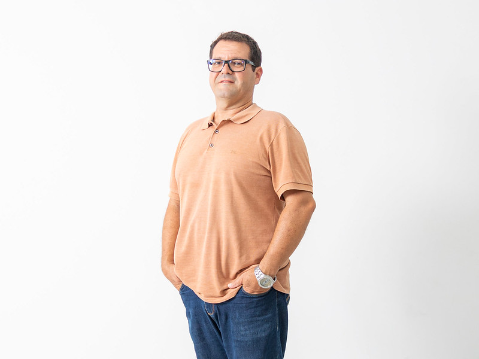
Fernando Bermejo Menechelli
Possui graduação em Arquitetura e Ubanismo pelo Centro Universitário de Votuporanga-UNIFEV (2008), Especialização em Ciência da Computação (2000) pelo Centro Universitário de Rio Preto-FIRP e graduação em Ciência da Computação pelo Centro Universitário de Rio Preto-FIRP (1998).
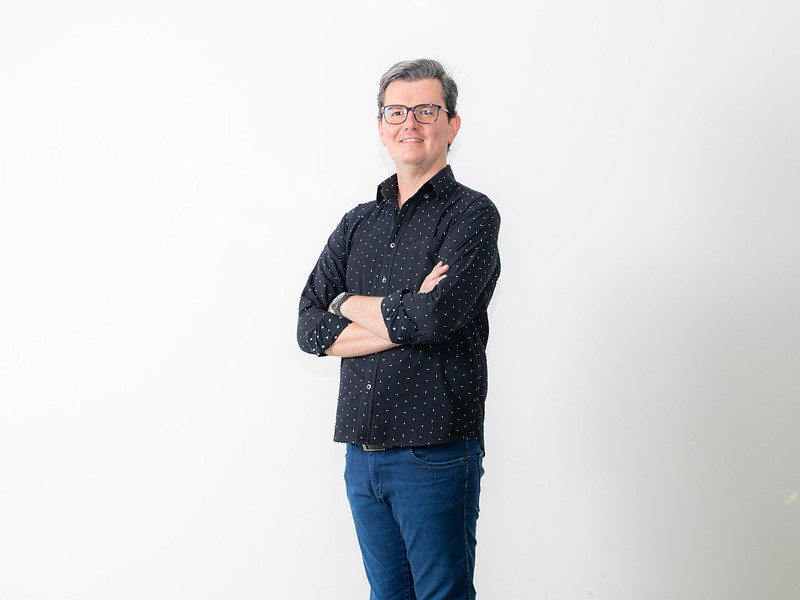
Camilo Augusto Giamatei Esteluti
Mestre em Estudos Linguísticos pela Unesp (2015). Especialista em Formação de Professores de Língua Estrangeira pela Unesp (2015) e em Metodologias para o Ensino de Línguas e Literatura pelo Unifev (2009). Graduado em Licenciatura em Letras - Português/Inglês pela Unifev (2006).
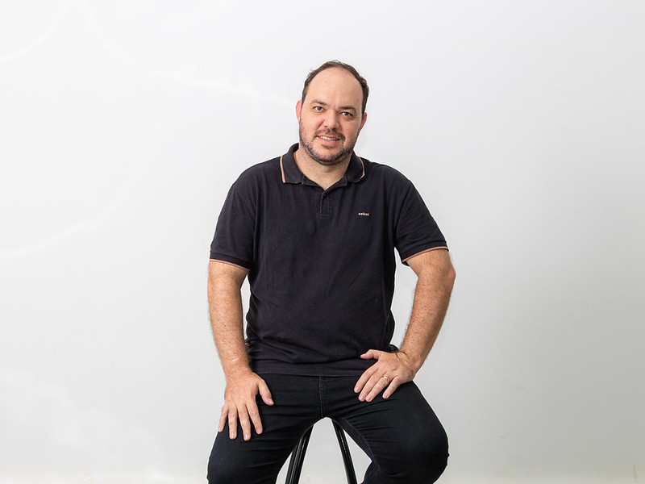
Claudomiro Viniciús Moreno Paschoa
Engenheiro Civil, Matemático e Biólogo; Mestre em Engenharia Civil, UNESP - Ilha Solteira; Especialista em Ensino de Ciências - UTFPR.

Edson Roberto Bogas Garcia
Pós-doutor e Doutor em Estudos Linguísticos na área de concentração do Tratamento do Léxico da Língua Geral (2012) pela Unesp. Mestre em Letras (Língua e Literatura Italiana) pela USP(1998). Graduado em Letras (Português e Italiano) pela Unesp(1990).
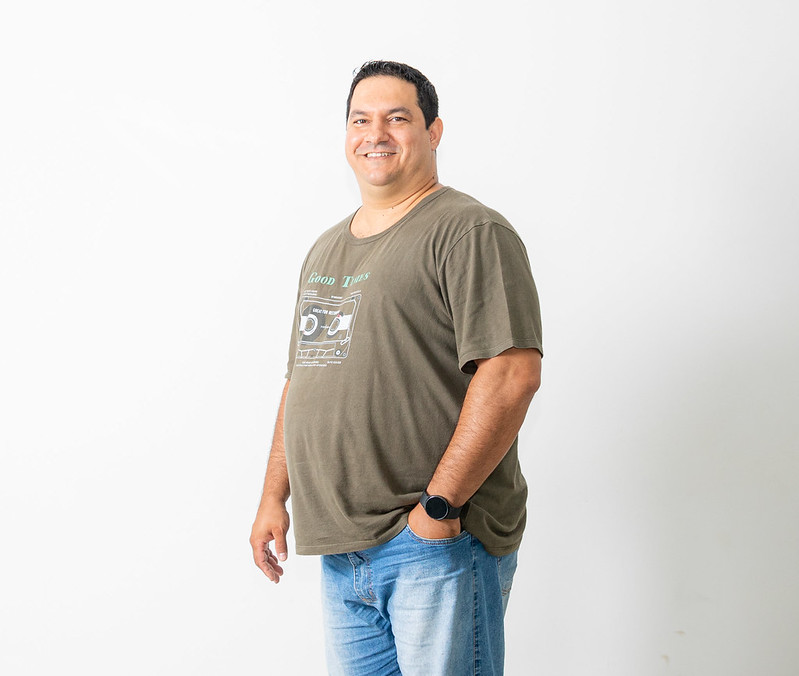
Eduardo De Souza
Possui formação técnica em contabilidade (2002). Graduação em Matemática pela Unesp (2009). Mestrado em Engenharia Elétrica pela Unesp (2013).

Eric De Oliveira Freitas
MBA em Gestão de Projetos pela Somay (2014). Possui graduação em Engenharia da Computação pelo Unifev (2008). Atua ainda como resposável pela programação e banco de dados do EAD Unifev.

Fernando Datorre
Bacharel em Sistemas de Informação pela Unifev(2006), Mestre em Bio-Engenharia pela Universidade Brasil (2017).

Fernando Kendy Aoki Rizzatto
Doutorado em Engenharia Biomédica na instituição Universidade Brasil(2024). Possui Mestrado em Ciências Ambientais na instituição Universidade Brasil (2016). Pós Graduado lato sensu em Desenvolvimento de Software para WEB na instituição Unifev em parceria com a Ufscar(2010). Graduado em Sistema de Informação pela Unifev (2008).
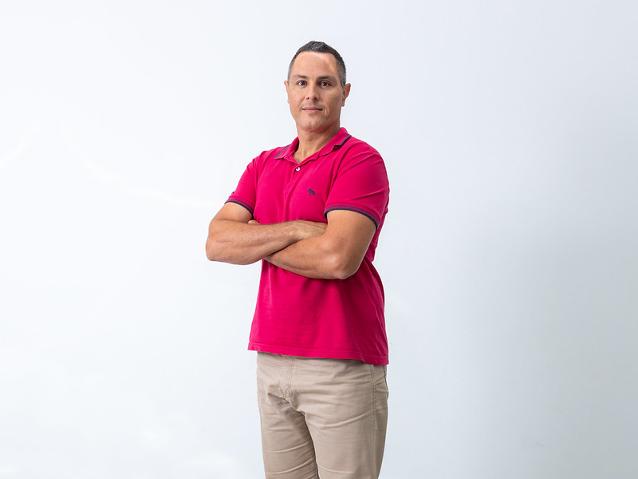
João Victor Marques Zoccal
Graduado em Química Ambiental pela Unesp(2007) e em Engenharia Ambiental pela Ufscar(2019). Mestre em Engenharia Química pela Ufscar (2010). Doutor em Engenharia Química pela Ufscar (2015).
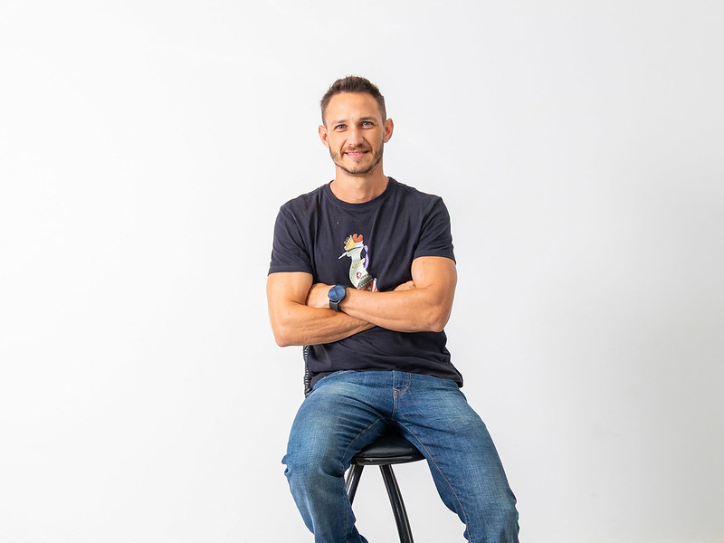
Marcos Paulo Segantini Dos Santos
Possui graduação em Licenciatura em Física pela Unesp(2011), graduação em Engenharia Civil pela Unifev (2016), pós graduação em Docência no Ensino Superior pela UCDB (2016), pós graduação em Engenharia de Segurança do Trabalho pela Unifev (2018) e mestrando em Matemática (ProfMat) pela USP
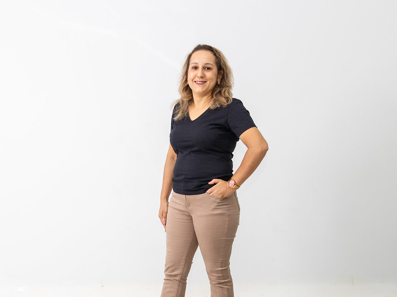
Milena Aparecida Batelo Ramos
Possui graduação em Licenciatura em Matemática pela Unesp (2000) e mestrado em Matemática pela Unesp (2002). Possui o curso de 2 Licenciatura em Pedagogia pela UNOPAR (2019).
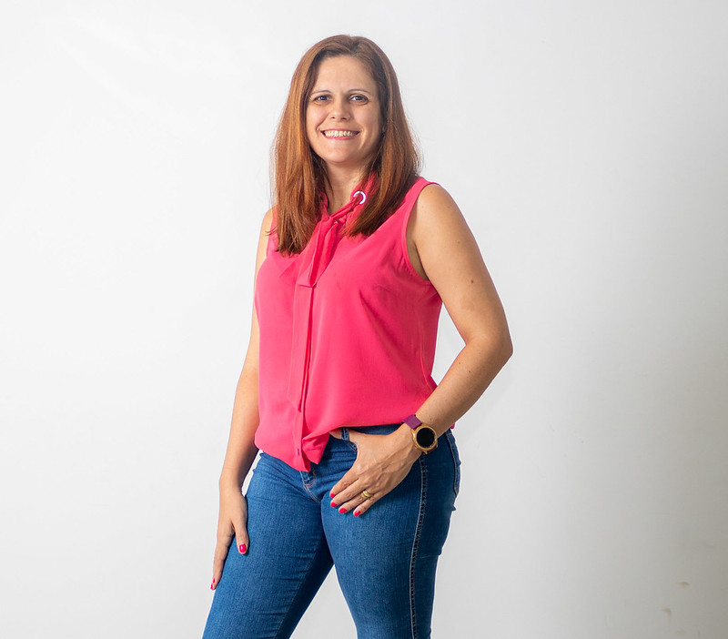
Patricia Salles Maturana De Souza
Possui graduação em Engenharia de Computação - Unifev (2006) e mestrado em Engenharia Elétrica pela Unesp (2010). Possui especialização no curso de empreendedorismo e inovação tecnológica criado pela união de 3 instituições: UNESP, Univesp e CREA (2021)
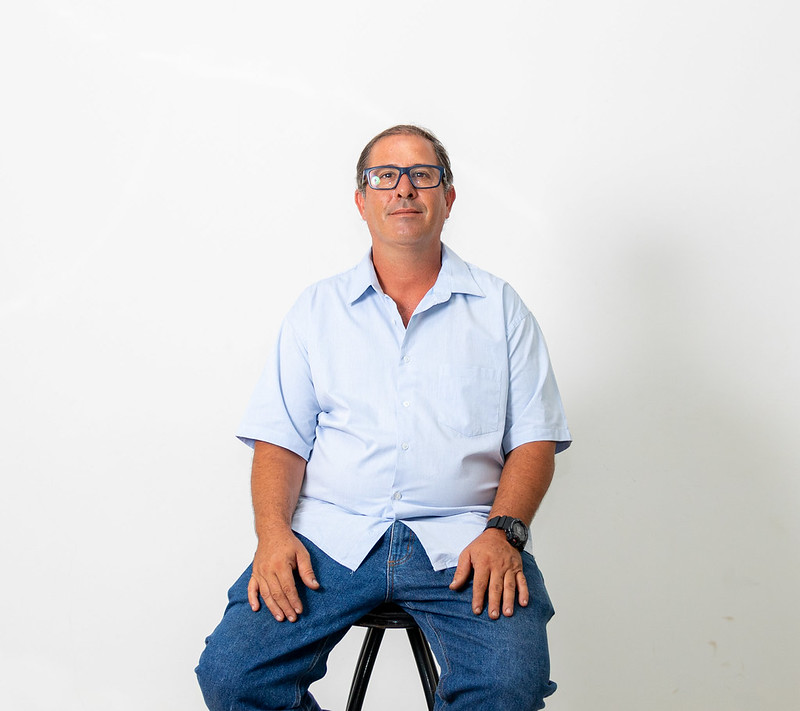
Renato Ferrari Da Costa
Bacharel em Engenharia Elétrica/Eletrônica com Ênfase em Telecomunicações - UNILINS. Possui Pós graduação Lato Sensu em Metodologia do Ensino Profissionalizante - FIJ.
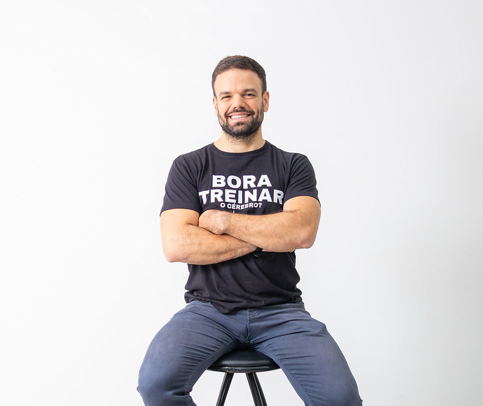
Rodrigo Salles Maturana
Possui Graduação em Engenharia Mecânica pela UNESP (2015), com período sanduíche na Hochschule Albstadt-Sigmaringen- Alemanha (Bolsa AREX-UNESP). No ano de 2019, concluiu o Mestrado em Engenharia Mecânica na USP.
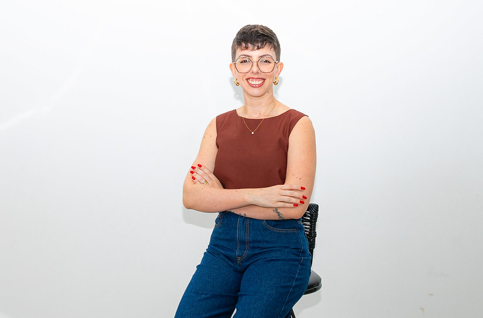
Tainá Fernanda Garbelim Pascoalato
Possui graduação em Engenharia Elétrica pela Unifev (2017). Recebeu o título de Mestre e de Doutora em Engenharia Elétrica pela UNESP, com bolsa CNPq (2020) e bolsa FAPESP (2024), respectivamente.